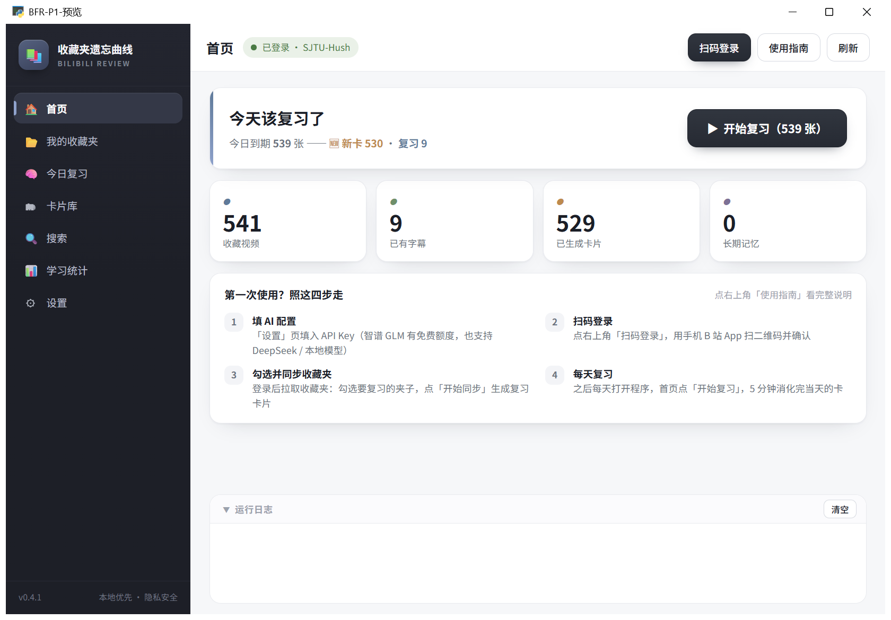

● 13 个项目 · 全部自用 · 数据本地优先
写给自己用的一批小工具
13 个桌面应用与作品,解决的都是些具体问题:数字验证码每次都要手输、 收藏夹攒了几百条从来没复习过、实验室那几台机器闲着就是闲着。 全部本地运行,数据不出本机。
14
自用项目
6
技术栈
98.0%
验证码识别准确率(留出集)
100%
滑块缺口定位通过率

实拍截图
上图是 05 收藏夹遗忘曲线的真实运行界面 —— 首页就写着「今天该复习了 539 张」,这正是这个项目存在的理由。
四个能一眼看懂的
13 个项目里,这四个的"为什么做"最容易讲清楚,也都留了真实截图。
一条完整的工作流
以 05 收藏夹遗忘曲线为例 —— 收藏、遗忘、复习、统计,是这批项目里链路最长的一条。
全部 13 个项目
涵盖 Electron、Python 桌面端、命令行与网页。多数项目零第三方依赖或明确记录了依赖边界。
关于这个站点的素材
三类标注,逐张说明,不含糊:实拍、界面示意、可交互源文件。
实拍截图
来自 4 个项目实际运行的界面,共 14 张:05 收藏夹遗忘曲线(7 张)、06 桌面宠物(2 张 + 1 个动图)、11 宿舍超算(3 张)、15 几何验证码(1 张)。页面上带绿色标记。
界面示意
9 个纯桌面应用无法用 URL 抓图,也没有历史截图留存。页面上带橙色标记的图是按其真实界面结构程序化绘制的示意图,布局与配色依据 README 描述,不代表截图原貌。
可交互源文件
09 军训视频脚本本身就是交互 HTML(拍摄分镜表 + 成片脚本),归为第三类:不是截图也不是示意图,源文件双击即开,详见该项目的详情页。